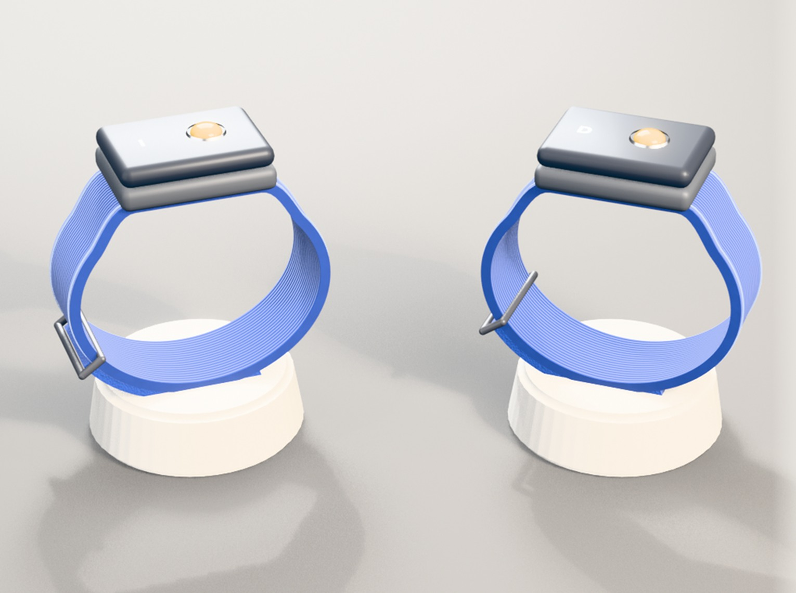

La empresa baja sus accidentes. El repartidor deja de mirar el celular.

Grupo 08 · ING2030 · noviembre 2026
El problema
Cada cambio de ruta es una mirada al celular
m
sin ver la calle: 2 segundos mirando el celular a 30 km/h
Revisar la app mientras se maneja «constituye un concreto riesgo para la seguridad».
FLACSO para la Subsecretaría del Trabajo (2023)
E1
Copiloto por voz
En moto y bici el oído no está libre
E2
La paga el repartidor
Solo 3 de 9 lo harían
E3
La paga la empresa
Tiene presupuesto de seguridad
30 km/h ≈ 8,3 m/s × 2 s ≈ 17 m. Problema: FLACSO Chile (2023), estudio para la Subsecretaría del Trabajo, p. 77; Ley 21.377 (Ley No Chat). E1: de Waard y otros (2011), Transportation Research Part F; Prasad y otros (2014), CHI. E2: entrevistas de validación del grupo; Ley 21.431, art. 152 quinquies F (Consejo Superior Laboral, 2026); OIT (2021). E3: DS 67 de la Ley 16.744.
El problema · ¿Y por qué no por voz?
En el auto la voz sirve. En moto y bici, no.
En moto
78–90 dB
de viento bajo el casco a 48 km/h: la instrucción por voz se pierde
En bici
68 %
no oyó un aviso de «pare» con audífonos: el oído avisa del auto que viene atrás
Mirar la pantalla
Ilegal
Ley No Chat: infracción gravísima manipular el celular al conducir, incluso detenido
En moto, avisar el giro con vibración produjo menos errores que un navegador comercial.
Kiss y otros (2018), estudio en ruta con 16 motociclistas, CHI 2018
Fuentes: Mutual de Seguridad (2021): 71,7 % de los repartidores anda en moto o bici. Moto: Universidad de Southampton (ISVR), 78–90 dB(A) a 48 km/h. Bici: de Waard y otros (2011), Transportation Research Part F; Stelling-Konczak y otros (2016). Ley 21.377 (Ley No Chat), art. 199 n.º 5 de la Ley de Tránsito: gravísima, 1,5 a 3 UTM; exceptúa el manos libres.
01 · Clientes
Paga la empresa, usa el repartidor
Partimos · año 1
Logística pequeña y reparto propio
700 kits
en ~10 empresas
Crecemos · año 5
Flotas medianas, luego Uber y Rappi
9.500 kits
en ~20 contratos
Nuestros repartidores representan al 34 % de nuestra gente y no podemos no preocuparnos.
Papa John's Chile
Con equipo de protección y capacitación, bajó 27 % su accidentabilidad entre 2019 y 2022.
Papa John's Chile, en Pacto Global
Fuentes: Pacto Global Chile, caso «Gestión responsable del delivery» de Papa John's Chile (accidentabilidad 0,46 en 2022); documento «E3 - Personas» y planilla NP20 P4 del grupo. Número de empresas: supuesto del grupo.
01 · Clientes · tamaño de mercado
Chile alcanza para partir, no para crecer
Chile
Año 3
Repartidores en Chile (boletas al mes)~45.700
Nuestra meta, año 37.800 kits
Repartidores en Brasil~485.000
Personas en apps en México1,27 M
Chile: boletas mensuales de PedidosYa, Uber Eats y Rappi, may-2025 (SII, en Consejo Superior Laboral, Tercera evaluación de la Ley 21.431, 2026). Brasil: IBGE, PNAD Contínua 2024. México: IMSS, piloto de plataformas, dic-2025 (incluye choferes). Meta: planilla NP20 P4.
01 · Clientes · canales y tracción
Cómo llegamos a las primeras empresas
Canal
Venta directa
Reunión con el dueño o el jefe de operaciones
Relación
Un ejecutivo por empresa
Reporte de conducción segura y soporte
15–20
Kits piloto gratis, a cambio de medir
1
Caso medido con y sin pulsera
250+
Kits por contrato desde el año 2
Fuente: documento «E3 - Personas» del grupo (Persona 2).
02 · Cadena de valor
Nosotros diseñamos e integramos, el resto se terceriza
Fabricantes y courier: cotizaciones del grupo (oct-2026). La planilla NP20 P4 no tiene arriendo de planta ni de oficina.
02 · Recursos, alianzas y protección
Lo que necesitamos y lo que nos protege
Recursos
Firmware y app
Mapas de OpenStreetMap
Equipo desde el mes 6
$6,5 M de inversión
Alianzas
Fabricante de placas
Empresa piloto
Más adelante: socios en otros países
Protección
1/10 del precio de un reloj
Relación con cada empresa
Datos de uso
Fuentes: documento «E3 - Personas» del grupo; Apple Watch SE 3 en Chile, oct-2026 (~$375.000). Competidores en el anexo A.
02 · Costos de producción
Producir un kit cuesta $14.774
Materiales$10.419
Carcasas$1.600
Armado y prueba$1.500
Empaque y garantía$1.006
Precio$30.000 Margen $15.226
Inversión inicial
$6,5 M
Gastos operativos, año 1
$43,1 M
la mayor parte es el equipo
Fuente: planilla NP20 P4 del grupo (costo presupuestado del año 1). Componentes cotizados en AliExpress el 7-oct-2026, con una rebaja supuesta de 40 % por volumen. El desglose suma $14.525; el resto cubre la marca de cada empresa.
03 · Modelo de ingresos
La empresa paga $30.000 por kit
Venta del kit
$30.000
neto por kit, con factura por pedido
En un solo pago, yo debería estar en 40.000. Te lo comparo con el casco.
Diego Rivera, ex PedidosYa (E2)
Una demanda por un accidente grave parte en 3.000 a 4.000 UF.
J. E., gerente de una empresa con flota (E1)
Fuentes: entrevistas E1 (J. E.) y E2 (D. Rivera); planilla NP20 P4 del grupo. $30.000 neto equivale a $35.700 con IVA.
04 · Proyecciones financieras
Utilidad desde el año 3
IngresosEgresosmillones de CLP
0
100
200
300
$21,0
$53,5
$105,0
$128,5
$234,0
$205,2
$264,0
$227,2
$285,0
$243,2
Año 1700 kits
Año 23.500 kits
Año 37.800 kits
Año 48.800 kits
Año 59.500 kits
Financiamiento necesario
$62,5 M
Recuperamos todo en
3,9 años
Planilla NP20 P4 del grupo, $30.000 neto por kit. Kits por año: pedidos de empresas pequeñas (fila «venta directa») más contratos con flotas (fila «canal B2B»). Resultado antes de impuestos e intereses.
04 · Escalabilidad
Crecer es sumar contratos y países
Año 1
Logística pequeña
Año 2
Flotas medianas
Después
Uber, Rappi y PedidosYa
Afuera
Brasil y México
Sin fábrica propia y con mapas abiertos: cada contrato suma cientos de kits.
Fuente: documento «E3 - Personas» del grupo (Personas 1 y 5).
Anexo A · Competidores y sustitutos
Quién más avisa el giro, y a qué precio
Alternativa
Costo por repartidor
¿Avisa sin mirar ni tapar los oídos?
Maps con voz y audífonos
$0
No: tapa los sonidos del tránsito
Soporte de celular
$6.000–24.000
No: igual hay que mirar la pantalla
Intercomunicador Bluetooth
$10.000–45.000
No: avisa por voz dentro del casco
Uber Driving Insights
Incluido en la app
No: mide el uso del teléfono, el giro se sigue mirando
Apple Watch o Garmin con Maps
~$375.000
Sí, vibra en cada giro
Guante VibrisPro
Sin precio
Sí, vibra en cada mano (concepto, sin venta)
Cinturón o chaqueta vibratoria
Sin precio
Sí, pero la mochila de reparto los tapa (prototipos académicos, sin venta)
Vira
$30.000 neto
Sí: vibra la pulsera del lado del giro
Fuentes: Uber 2026 Governance Report; precios Lider.cl, Falabella.com y Mercado Libre (oct-2026); PA Consulting (VibrisPro); Kiss y otros (2018) y Prasad y otros (2014), CHI.
Anexo B · Supuestos y cómo los validamos
Lo que todavía falta probar
Supuesto
Valor
De dónde sale
Cómo se valida
Precio del kit
$30.000 neto
Ancla de $40.000 (D. Rivera, E2)
Entrevistas con jefes de operaciones
Ventas del año 1
700 kits en ~10 empresas (~70 c/u)
Planilla NP20 P4 y supuesto del grupo
Empresa piloto y primeros pedidos
Contratos
250 a 500 kits desde el año 2
Supuesto del grupo
Caso medido con la empresa piloto
Rebaja por volumen
40 % en componentes
Supuesto
Cotización a fabricante
Menos uso de pantalla
Por medir
Maqueta
Piloto con y sin pulsera
Repartidores en Chile
~45.700 boletas al mes
SII, may-2025 (CSL 2026)
39,6 % trabaja en 2 o 3 apps: ~30–40 mil personas
Anexo C · Contribuciones
Quién hizo qué
Integrante
Línea de trabajo
Aporte concreto
Alexa Pasten
Persona 1: segmentos y tamaño de mercado
Cliente empresa y usuario, mercado en Chile y Latinoamérica, caso de Papa John's
María Martínez
Persona 2: canales y relación con clientes
Canales, relación, posventa, plan de tracción e indicadores
Vicente Carril
Persona 3: cadena de valor, recursos, alianzas y protección
Cadena de valor, maqueta con rutas reales y armado de la presentación
Martín Tapia
Persona 4: costos y proyecciones
Planilla de costos y proyecciones a 5 años, recuperación y número de empresas
Alonso Casanova
Persona 5: ingresos, precio y escalabilidad
Fuentes de ingreso, precio con entrevistas y comparables, curva de adopción
Anexo D · Declaración de uso de inteligencia artificial
Cómo usamos la IA en esta entrega
Herramienta
Para qué la usamos
ChatGPT (OpenAI)
Buscar fuentes y casos de empresas, como el de Papa John's Chile
Claude (Anthropic)
Buscar y revisar fuentes, analizar la rigurosidad de la propuesta, ordenar la planilla de costos, y redactar y diseñar esta presentación
Las entrevistas, las decisiones del modelo de negocio y las cifras de la planilla son del equipo. Las cifras citadas tienen su fuente al pie de cada lámina.